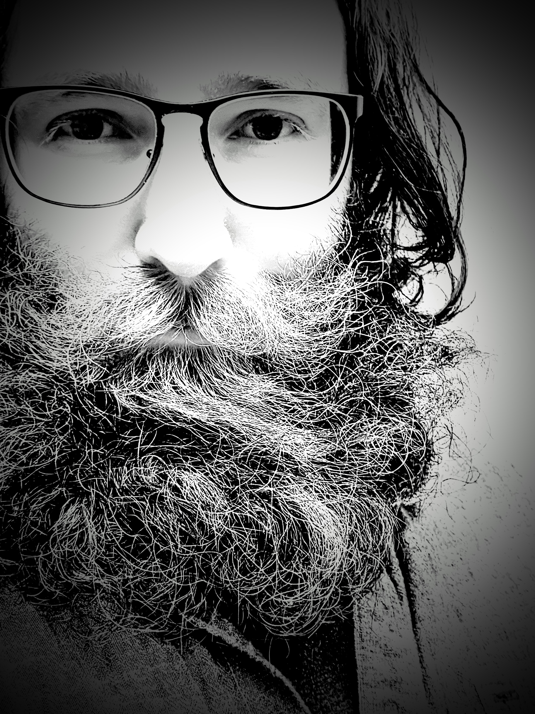

|

|
Jason Weible
Computer Science and Engineering Student at Ohio State University
I am a senior undergraduate at Ohio State University, studying Computer Science and Engineering.
My specializations are in Artificial Intelligence and Software Engineering.
|
Education
BS Computer Science and Engineering, Ohio State University, Spring 2022
Expected: Honors Research Distinction in Computer Science and Engineering
Minor: Philosophy
GPA: 3.542, Cum Laude
Technical Skills
Programming Languages: Java, C/C++, Python, SQL, HTML, CSS, JavaScript, Ruby, MERN Stack
Technologies: Matlab, Jira, Git, Github, Linux, Bash, Powershell, Postman, Google Cloud
Poster Presentations
Ohio State University, Translational Data Analytics Institute, Fall Forum, November 2021
Projects in Vision Science
- Presented ongoing research over the feasibility of computationally measuring retinal nerve fiber bundles (RFNBs) of the human eye, a process that has only been performed manually in published research
- Images analyzed are adaptive optics scanning laser opthalmoscope (AOSLO) images
- Early results indicate possibility of computationally measuring RNFBs, potentially leading to a new method of diagnosing glaucoma and other eye related diseases
Research Experience
Ohio State University, Computer Science Department, July 2021 - Present
Research Assistant
- Programmed automatic image processing tools to assist in binarization process
- Manually annotated 325 optometry images to create a supervised learning dataset
Ohio State University, Political Science Department, June 2017 - January 2018
Research Assistant
- Utilized Microsoft Excel VBA to eliminate possibility of error from direct data entry
- Reduced completion time by 80%
- Identified and documented error from conflicting data sources to allow informed error resolution decision
- Manually classified qualitative archive data and notified research team of incomplete archive data
Teaching Experience
Ohio State University, Engineering Education Department, August 2018 - May 2020
Undergraduate Teaching Assistant
- Provided instruction and guidance on course content, including Microsoft Excel, Matlab, and Solidworks
- Create a supportive, inclusive, and professional learning environment
- Maintained a 96.15% positive or neutral feedback score
Work Experience
Accurate Soutions, LLC, July 2021 - November 2021
Software Test Engineer Intern
- Developed test scripts to assist in Software Development Life Cycle process
- Performed User Acceptance Testing and User Functional Testing in an efficient and consistent manner
- Documented defects using Jira bug tracking software
Acceleration Systems, July 2014 - August 2014
Intern
- Performed BIOS installation for physical products and implemented call process for VoIP system
- Developed documentation for all processes and tasks, ensuring standardization and consistency
Weible and Associates, CPA, September 2013 - December 2013
Intern
- Performed data entry for billing software
- Completed various office related tasks
Personal Projects
Time Tracking Java Applet
- Recognized and implemented time monitoring techniques to measure and analyze time spent throughout the day
- Programmed a basic time clock application in Java, designed using the JavaFX library
C++ Custom Serialization Library
- Replicated serialization function after integrating C++ Boost library to existing project
- Explored serialization practices which emphasized importance of following software design principles
Community Service Experience
Ohio State University, Wexner Medical Center, August 2018 - May 2020
Volunteer
- Completed rotation of duties in multiple units, including Surgical Intensive Care Unit and Surgical Prep and Recovery
- Maintained a calm and respectful demeanor in a high stress, emotionally charged environment
Great Lakes Science Center
Volunteer
- Provided tours to guest, showcasing and explaining scientific exhibits
- Enforce Great Lakes Science Center Policies as needed
Extra Curricular
Honor Scholars, Bowling Green State University, November 2011 - May 2013
Member
Ethics Bowl Debate Team, Bowling Green State University, September 2012 - May 2013
Member
Philosophy Club, Bowling Green State University, September 2012 - May 2013
Member
Red Cross Club, Bowling Green State University, September 2012 - May 2013
Treasurer
Students for Educational Excellence, Bowling Green State University, January 2013 - May 2013
Co-Founder and Vice President